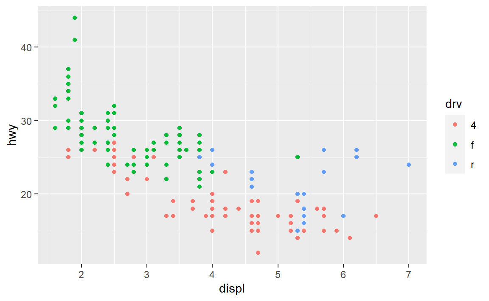
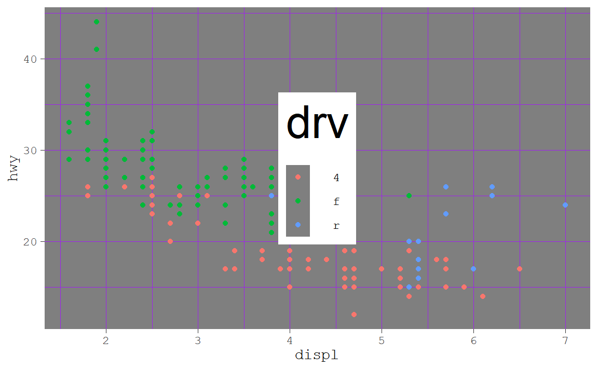
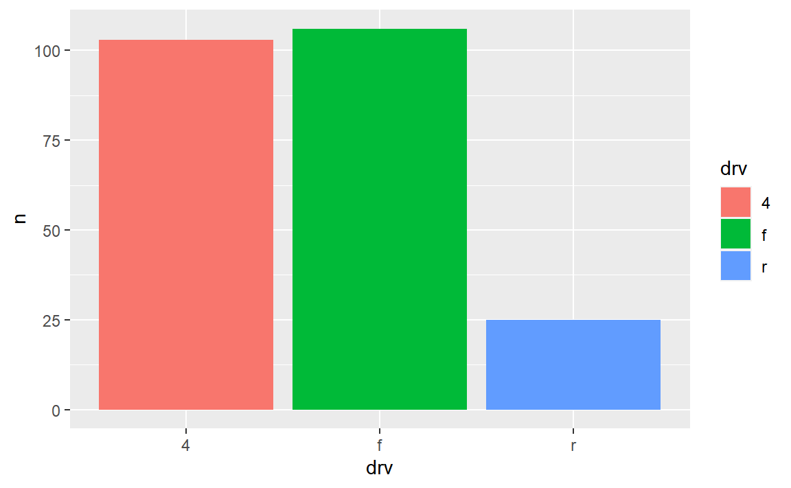
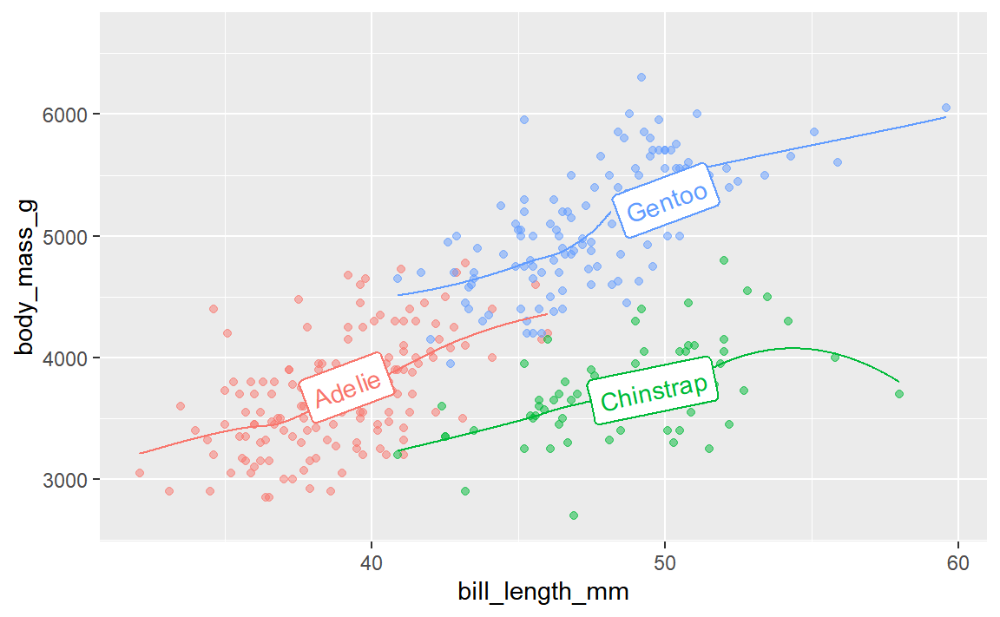
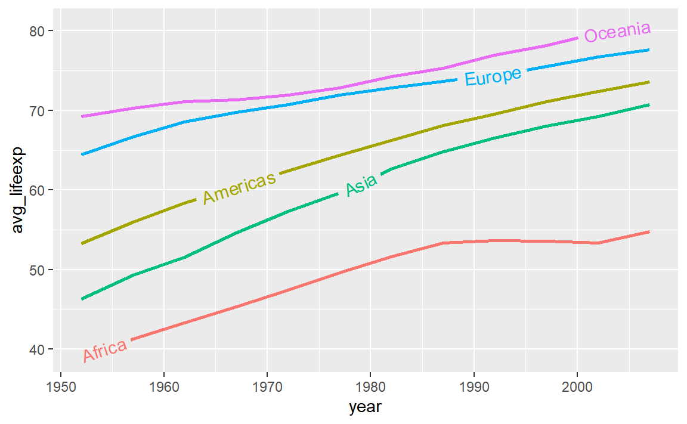
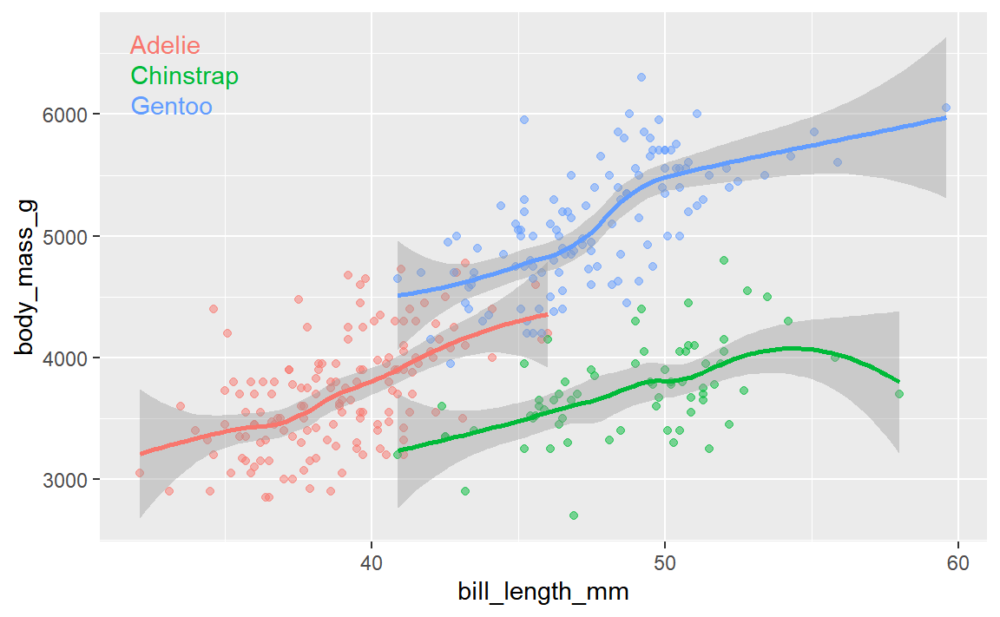

ugly_plot <- ggplot(mpg, aes(x = displ, y = hwy, color = drv)) +
geom_point()
ugly_plot
Wednesday September 27, 2023 at 3:16 PM
Hi everyone!
Great work with your ugly plots last week! Hopefully it gave you good exposure to the power of ggplot themes. In the future, you’ll want to avoid such awful design sins and follow CRAP for real, but now you know how to make all sorts of adjustments to your plots in the future.
There are a few good and important FAQs for this week. Here we go!
theme() but when I used ggsave(), none of them actually saved. Why?This is a really common occurrence—don’t worry! And it’s easy to fix!
In the code I gave you in exercise 5, you stored the results of ggplot() as an object named ugly_plot, like this (this isn’t the same data as exercise 5, but shows the same general principle):
That ugly_plot object contains the basic underlying plot that you wanted to adjust. You then used it with {ggThemeAssist} to make modifications, something like this:
ugly_plot +
theme_dark(base_family = "mono") +
theme(
legend.position = c(0.5, 0.5),
legend.title = element_text(family = "Comic Sans MS", size = rel(3)),
panel.grid = element_line(color = "purple")
)
## Warning in grid.Call(C_stringMetric, as.graphicsAnnot(x$label)): font family
## not found in Windows font database
## Warning in grid.Call(C_textBounds, as.graphicsAnnot(x$label), x$x, x$y, : font
## family not found in Windows font database
That’s great and nice and ugly and it displays in your document just fine. If you then use ggsave() like this:
…you’ll see that it actually doesn’t save all the theme() changes. That’s because it’s saving the ugly_plot object, which is just the underlying base plot before adding theme changes.
If you want to keep the theme changes you make, you need to store them in an object, either overwriting the original ugly_plot object, or creating a new object:
Absolutely! We don’t have time in this class to cover tables, but there’s a whole world of packages for making beautiful tables with R. Three of the more common ones are {gt}, {kableExtra}, and {flextable}:
## Warning: package 'gt' was built under R version 4.2.3| Package | Output support | Notes | |||
|---|---|---|---|---|---|
| HTML | Word | ||||
Great |
Okay |
Okay |
Has the goal of becoming the “grammar of tables” (hence “gt”). It is supported by developers at Posit and gets updated and improved regularly. It’ll likely become the main table-making package for R. | ||
Great |
Great |
Okay |
Works really well for HTML output and has the best support for PDF output, but development has stalled for the past couple years and it seems to maybe be abandoned, which is sad. | ||
Great |
Okay |
Great |
Works really well for HTML output and has the best support for Word output. It’s not abandoned and gets regular updates. | ||
Here’s a quick illustration of these three packages. All three are incredibly powerful and let you do all sorts of really neat formatting things ({gt} even makes interactive HTML tables!), so make sure you check out the documentation and examples. I personally use all three, depending on which output I’m working with. When knitting to HTML, I use {gt}; when knitting to PDF I use {gt} or {kableExtra}; when knitting to Word I use {flextable}.
library(gt)
cars_summary %>%
gt() %>%
cols_label(
drv = "Drive",
n = "N",
avg_mpg = "Average",
median_mpg = "Median",
min_mpg = "Minimum",
max_mpg = "Maximum"
) %>%
tab_spanner(
label = "Highway MPG",
columns = c(avg_mpg, median_mpg, min_mpg, max_mpg)
) %>%
fmt_number(
columns = avg_mpg,
decimals = 2
) %>%
tab_options(
row_group.as_column = TRUE
)| Drive | N | Highway MPG | ||||
|---|---|---|---|---|---|---|
| Average | Median | Minimum | Maximum | |||
| 1999 | 4 | 49 | 18.84 | 17 | 15 | 26 |
| f | 57 | 27.91 | 26 | 21 | 44 | |
| r | 11 | 20.64 | 21 | 16 | 26 | |
| 2008 | 4 | 54 | 19.48 | 19 | 12 | 28 |
| f | 49 | 28.45 | 29 | 17 | 37 | |
| r | 14 | 21.29 | 21 | 15 | 26 | |
library(kableExtra)
cars_summary %>%
ungroup() %>%
select(-year) %>%
kbl(
col.names = c("Drive", "N", "Average", "Median", "Minimum", "Maximum"),
digits = 2
) %>%
kable_styling() %>%
pack_rows("1999", 1, 3) %>%
pack_rows("2008", 4, 6) %>%
add_header_above(c(" " = 2, "Highway MPG" = 4))
Highway MPG
|
|||||
|---|---|---|---|---|---|
| Drive | N | Average | Median | Minimum | Maximum |
| 1999 | |||||
| 4 | 49 | 18.84 | 17 | 15 | 26 |
| f | 57 | 27.91 | 26 | 21 | 44 |
| r | 11 | 20.64 | 21 | 16 | 26 |
| 2008 | |||||
| 4 | 54 | 19.48 | 19 | 12 | 28 |
| f | 49 | 28.45 | 29 | 17 | 37 |
| r | 14 | 21.29 | 21 | 15 | 26 |
library(flextable)
## Warning: package 'flextable' was built under R version 4.2.3
cars_summary %>%
rename(
"Year" = year,
"Drive" = drv,
"N" = n,
"Average" = avg_mpg,
"Median" = median_mpg,
"Minimum" = min_mpg,
"Maximum" = max_mpg
) %>%
mutate(Year = as.character(Year)) %>%
flextable() %>%
colformat_double(j = "Average", digits = 2) %>%
add_header_row(values = c(" ", "Highway MPG"), colwidths = c(3, 4)) %>%
align(i = 1, part = "header", align = "center") %>%
merge_v(j = ~ Year) %>%
valign(j = 1, valign = "top")
| Highway MPG | |||||
|---|---|---|---|---|---|---|
Year | Drive | N | Average | Median | Minimum | Maximum |
1999 | 4 | 49 | 18.84 | 17 | 15 | 26 |
f | 57 | 27.91 | 26 | 21 | 44 | |
r | 11 | 20.64 | 21 | 16 | 26 | |
2008 | 4 | 54 | 19.48 | 19 | 12 | 28 |
f | 49 | 28.45 | 29 | 17 | 37 | |
r | 14 | 21.29 | 21 | 15 | 26 | |
You can also create more specialized tables for specific situations, like side-by-side regression results tables with {modelsummary} (which uses {gt}, {kableExtra}, or {flextable} behind the scenes)
library(modelsummary)
## Warning: package 'modelsummary' was built under R version 4.2.3
model1 <- lm(hwy ~ displ, data = mpg)
model2 <- lm(hwy ~ displ + drv, data = mpg)
modelsummary(
list(model1, model2),
stars = TRUE,
# Rename the coefficients
coef_rename = c(
"(Intercept)" = "Intercept",
"displ" = "Displacement",
"drvf" = "Drive (front)",
"drvr" = "Drive (rear)"),
# Get rid of some of the extra goodness-of-fit statistics
gof_omit = "IC|RMSE|F|Log",
# Use {gt}
output = "gt"
)| (1) | (2) | |
|---|---|---|
| Intercept | 35.698*** | 30.825*** |
| (0.720) | (0.924) | |
| Displacement | -3.531*** | -2.914*** |
| (0.195) | (0.218) | |
| Drive (front) | 4.791*** | |
| (0.530) | ||
| Drive (rear) | 5.258*** | |
| (0.734) | ||
| Num.Obs. | 234 | 234 |
| R2 | 0.587 | 0.736 |
| R2 Adj. | 0.585 | 0.732 |
| + p < 0.1, * p < 0.05, ** p < 0.01, *** p < 0.001 | ||
As you’ve read, double encoding aesthetics can be helpful for accessibility and printing reasons—for instance, if points have colors and shapes, they’re still readable by people who are colorblind or if the image is printed in black and white:
Sometimes the double encoding can be excessive though, and you can safely remove legends. For example, in exercises 3 and 4, you made bar charts showing counts of different things (words spoken in The Lord of the Rings; pandemic-era construction projects in New York City), and lots of you colored the bars, which is great!
car_counts <- mpg %>%
group_by(drv) %>%
summarize(n = n())
ggplot(car_counts, aes(x = drv, y = n, fill = drv)) +
geom_col()
Car drive here is double encoded: it’s on the x-axis and it’s the fill. That’s great, but having the legend here is actually a little excessive. Both the x-axis and the legend tell us what the different colors of drives are (four-, front-, and rear-wheeled drives), so we can safely remove the legend and get a little more space in the plot area:
Yes! Later in the semester we’ll cover annotations, but in the meantime, you can check out a couple packages that let you directly label geoms that have been mapped to aesthetics.
The {geomtextpath} package lets you add labels directly to paths and lines with functions like geom_textline() and geom_labelline() and geom_labelsmooth().
Like, here’s the relationship between penguin bill lengths and penguin weights across three different species:
# This isn't on CRAN, so you need to install it by running this:
# remotes::install_github("AllanCameron/geomtextpath")
library(geomtextpath)
## Warning: package 'geomtextpath' was built under R version 4.2.3
library(palmerpenguins) # Penguin data
## Warning: package 'palmerpenguins' was built under R version 4.2.3
# Get rid of the rows that are missing sex
penguins <- penguins %>% drop_na(sex)
ggplot(
penguins,
aes(x = bill_length_mm, y = body_mass_g, color = species)
) +
geom_point(alpha = 0.5) + # Make the points a little bit transparent
geom_labelsmooth(
aes(label = species),
# This spreads the letters out a bit
text_smoothing = 80
) +
# Turn off the legend bc we don't need it now
guides(color = "none")
And the average continent-level life expectancy across time:
library(gapminder)
## Warning: package 'gapminder' was built under R version 4.2.3
gapminder_lifeexp <- gapminder %>%
group_by(continent, year) %>%
summarize(avg_lifeexp = mean(lifeExp))
ggplot(
gapminder_lifeexp,
aes(x = year, y = avg_lifeexp, color = continent)
) +
geom_textline(
aes(label = continent, hjust = continent),
linewidth = 1, size = 4
) +
guides(color = "none")
A new package named {ggdirectlabel} lets you add legends directly to your plot area:
# This also isn't on CRAN, so you need to install it by running this:
# remotes::install_github("MattCowgill/ggdirectlabel")
library(ggdirectlabel)
ggplot(
penguins,
aes(x = bill_length_mm, y = body_mass_g, color = species)
) +
geom_point(alpha = 0.5) +
geom_smooth() +
geom_richlegend(
aes(label = species), # Use the species as the fake legend labels
legend.position = "topleft", # Put it in the top left
hjust = 0 # Make the text left-aligned (horizontal adjustment, or hjust)
) +
guides(color = "none")